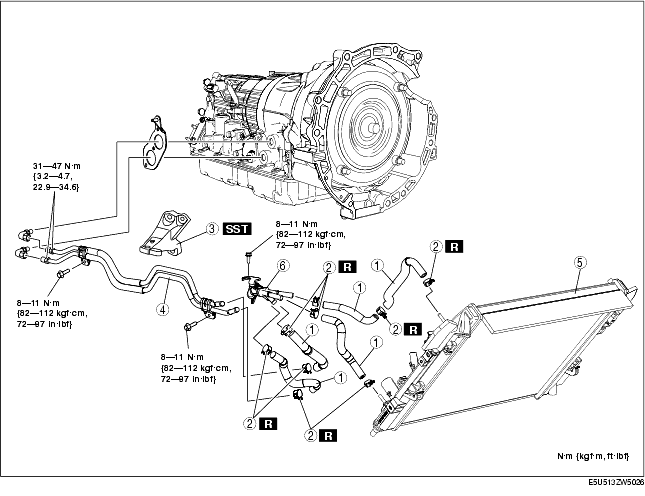

Workshop Manual ➭ TRANSMISSION/TRANSAXLE ➭ AUTOMATIC TRANSMISSION[SJ6A-EL] ➭ OIL COOLER REMOVAL/INSTALLATION [SJ6A-EL]
OIL COOLER REMOVAL/INSTALLATION [SJ6A-EL]
id051311248700
{: #wp1059782}
-
Remove the battery cover.
-
Disconnect the negative battery cable. (See BATTERY REMOVAL/INSTALLATION [L8, LF].)
-
Drain the ATF. (See AUTOMATIC TRANSMISSION FLUID (ATF) REPLACEMENT [SJ6A-EL].)
-
Drain the engine coolant. (See ENGINE COOLANT REPLACEMENT [L8, LF].)
-
Remove the following parts.
(1) Splash shield {: #wp1059856}(2) Under cover {: #wp1059866}(3) Mudguard {: #wp1059876}(4) Battery, battery tray, battery duct (See BATTERY REMOVAL/INSTALLATION [L8, LF].) {: #wp1059886}(5) Air cleaner (See INTAKE-AIR SYSTEM REMOVAL/INSTALLATION [L8, LF].) {: #wp1059904}(6) PCM and air cleaner insulator (See PCM REMOVAL/INSTALLATION [L8, LF].) {: #wp1059922}(7) Coolant reserve tank (See COOLANT RESERVE TANK REMOVAL/INSTALLATION [L8, LF].) {: #wp1059940}(8) Tunnel member component {: #wp1059958}(9) Transverse member {: #wp1059968}(10) Exhaust manifold bracket {: #wp1059978}(11) Middle pipe (See EXHAUST SYSTEM REMOVAL/INSTALLATION [L8, LF].)
-
Remove in the order indicated in the table.
-
Install in the reverse order of removal.
-
Add the engine coolant. (See ENGINE COOLANT REPLACEMENT [L8, LF].)
-
Add ATF to the specified level. (See AUTOMATIC TRANSMISSION FLUID (ATF) REPLACEMENT [SJ6A-EL].)
-
Inspect for oil leakage from the oil pipes and oil hoses.
-
Inspect for coolant from the hoses.
-
Inspect for engine coolant leakage.(See ENGINE COOLANT LEAKAGE INSPECTION [L8, LF].)
-
Inspect the ATF level and condition. (See AUTOMATIC TRANSMISSION FLUID (ATF) INSPECTION [SJ6A-EL].)

|
Oil hose {: #wp1060149} (See Oil Pipe, Hose clamp, Oil hose Installation Note.) {: #wp1060213} |
|
|---|---|
|
2 {: #wp1060187} |
Hose clamp {: #wp1060190} (See Oil Pipe, Hose clamp, Oil hose Installation Note.) {: #wp1060237} |
|
3 {: #wp1060194} |
Engine mount (RH) {: #wp1060197} (See Engine Mount Removal Note.) {: #wp1060261} |
|
4 {: #wp1060273} |
Oil pipe, oil hose {: #wp1060276} (See Oil Pipe, Hose clamp, Oil hose Installation Note.) {: #wp1060298} |
|
5 {: #wp1060310} |
Radiator (in tank oil cooler) {: #wp1060313} (See RADIATOR REMOVAL/INSTALLATION [L8, LF].) {: #wp1060337} (See Radiator (In Tank Oil Cooler) Installation Note.) {: #wp1060351} |
|
6 {: #wp1060363} |
Oil pipe {: #wp1060366} (See Oil Pipe, Hose clamp, Oil hose Installation Note.) {: #wp1060394} |
Engine Mount Removal Note
- Support the engine using the SST.{: #wp1060446}
- Remove the engine mount.
Radiator (In Tank Oil Cooler) Installation Note
- The automatic transmission oil cooler flushing must be performed whenever a transmission is removed for service because the existing fluid may be contaminated, and to prevent contamination of new fluid.
*Note*{: #wp1060513}
• Flushing must be performed after installation of the overhauled or replaced transmission.
- Follow the instructions in the manufacturer's publication for flushing operation.
Oil Pipe, Hose clamp, Oil hose Installation Note
- Apply compressed air to cooler-side opening, and blow any remaining grime and foreign material from the cooler pipes. Compressed air should be applied for more than 1 min.{: #wp1060553}
- Be sure to install the oil hose between the power steering pipe and the radiator cowl as shown in the figure.{: #wp1060591}
- Align the marks, and slide the oil hose onto the oil pipe until it is fully seated as shown.{: #wp1060618}
- Install the hose clamp onto the hose.
*Note*{: #wp1060655}
• If reusing the hose, install the new hose clamp exactly on the mark left by the previous hose clamp. Then apply force to the hose clamp in the direction of the arrow in order to fit the clamp in place.
- Verify that the hose clamp does not interfere with any other components.